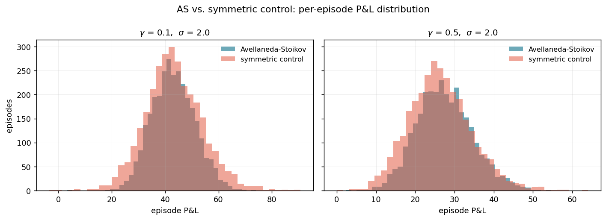
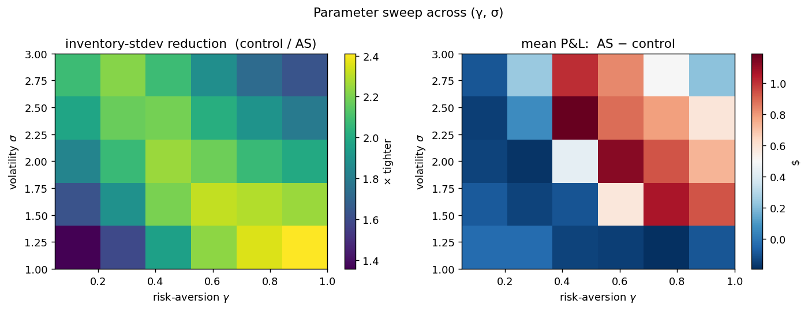

The market-maker that
knows when it is long.
Reproducing Sasson, Ho & Samson (Stanford MSE448) inside an Islo sandbox — one shell command, two thousand simulated trading sessions, no local Python.
The 2018 MSE448 paper "High Frequency Trading Strategies" compares two limit-order strategies: the Avellaneda–Stoikov optimal market-maker, which steers its quotes around its current inventory, and a symmetric control that always quotes around the mid. Cleanly separating these two strategies needs a clean environment — every parameter sweep, a fresh process, no Jupyter kernel leakage, matplotlib at a known version, no host pollution.
An Islo sandbox is a Linux microVM you can lease, run a thing inside, and throw away. The reproduction below was computed in one — pip-installed matplotlib, ran the sweep, streamed the PNGs back over stdout. The whole loop takes about 90 seconds and costs less than a coffee.
§ 01The one-liner
If you have crabbox and an Islo API key, the entire reproduction below is:
# lease an isolated python sandbox, run the sweep, release it export ISLO_API_KEY=ak_… git clone https://github.com/zozo123/microprice-sandbox && cd microprice-sandbox ./scripts/run_in_sandbox.sh # < 90s end-to-end
That script warms an Islo lease, base64-streams scripts/sweep.py into the sandbox, pip install matplotlibs, runs the sweep, and tar-pipes results.json and the PNGs back. The lease is released on trap EXIT.
§ 02What the paper says, briefly
A market-maker quotes a bid and an ask around what it believes the fair price is, and earns the spread when both sides get hit. Two sources of risk: adverse selection (you keep getting hit only on the losing side) and inventory (you accumulate exposure that can move against you). The mid-price ignores both. The microprice corrects for imbalance and spread. The Avellaneda–Stoikov reservation price corrects for inventory.
For exponential order-arrival intensities λ(δ) = A·e−kδ and GBM mid dS = σ·dW, AS derive a closed form:
The reservation price r drifts away from the mid in proportion to how much inventory you are sitting on, in the direction that makes the next trade more likely to flatten you. The control strategy quotes the same half-spread but always around the mid, with no inventory feedback.
§ 03The reproduction
Below: P&L distributions across 3,000 episodes per cell, 200 quote-update steps per episode, GBM mid with the parameters in the paper. Computed inside a fresh python:3.12-slim Islo sandbox.

| strategy | γ | σ | mean P&L | std P&L | avg q | std q |
|---|---|---|---|---|---|---|
| AS | 0.10 | 2.0 | 43.03 | 8.07 | −0.03 | 2.53 |
| control | 0.10 | 2.0 | 43.21 | 10.75 | −0.06 | 5.24 |
| AS | 0.50 | 2.0 | 27.47 | 7.14 | −0.02 | 1.73 |
| control | 0.50 | 2.0 | 26.35 | 8.01 | −0.01 | 3.76 |
The number to stare at is std q: AS halves it. That column is the entire point of the strategy.

§ 04Why an Islo sandbox?
Three things are awkward about reproducing quantitative-finance papers locally:
State leakage
Jupyter kernels carry hidden state across cells. Notebook-driven results don't reproduce unless you restart the kernel between every parameter, which nobody does.
Toolchain drift
matplotlib 3.7 and 3.10 don't render the same charts. The reproduction belongs to a specific image, not "whatever was on the laptop in 2018".
Host pollution
You shouldn't have to pip install matplotlib on the laptop to read a paper. A sandbox is the right granularity: one paper, one sandbox, throw it away.
Parallel parameter sweeps
A 6 × 5 grid is 30 independent runs. Each one in its own sandbox is the natural shape; nothing leaks between cells, and you can fan them out trivially.
§ 05Caveats
This is a synthetic reproduction. The paper fits σ and the arrival decay κ on real AAPL and CVX L1 data (the absolute numbers in Tables 1 and 2 reflect those fits). I use the paper's structural model — GBM mid, exponential arrival rates — with stylized constants. The qualitative result (AS roughly halves inventory variance and tightens P&L variance) reproduces; the absolute dollar magnitudes do not, and shouldn't be expected to. The microprice section of the paper isn't reproduced here, because it requires a real order book.
§ 06What's in the repo
- scripts/demo.py — pure-stdlib AS vs control simulator (no matplotlib needed, prints a table)
- scripts/sweep.py — (γ, σ) grid sweep, emits results.json + the two PNGs above
- scripts/run_in_sandbox.sh — warms an Islo lease, runs the sweep there, tar-pipes artifacts back, releases on exit
- assets/results.json — the full numeric output that produced the chart above